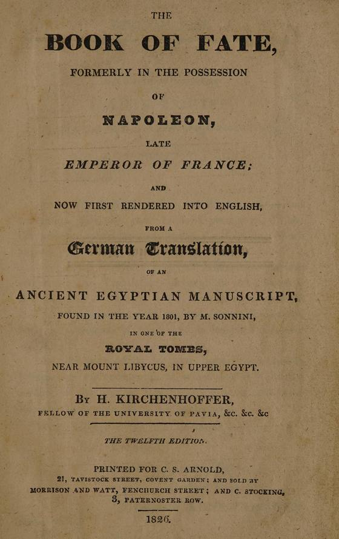

|
“Does the person whom I love Love and regard me?”
That question was printed in a book in London, in 1822.
Today we’d just say: does he love me?
Same question. And people paid five shillings to ask it.
The book was called The Book of Fate.

The Book of Fate, twelfth edition, London, 1826.
Scan: Wellcome Collection (public domain)
Its title page makes a big promise. It says the book came from an old Egyptian scroll, found in 1801 in a royal tomb. The first pages add that Napoleon owned it, and lost it when he was beaten at Leipzig in 1813.
Is any of that true? Almost certainly not. The experts say the whole story was made up.
But the book sold. By 1826 it was on its twelfth edition. You can read that copy free online today. That’s how I’ve been reading it.
Here’s how it worked.
You picked one of its 32 questions. Then you drew five rows of little lines on paper, fast, without counting. Odd or even, row by row, made a pattern of stars. Your stars and your question led you to your answer.
The ancient rules said to draw your lines with a reed dipped in blood. But the translator added a little note at the bottom. He and his friends had always used “a pen dipped in common ink.”
I’m glad somebody checked.
So I looked up question 26, the one at the top of this letter. It has 32 possible answers.
One of them stopped me.
“Thou art more beloved than thou canst be now aware of.”
In plain words, the book is saying: you’re loved more than you know right now.
I think the old writer got something true there. When we love someone, we count what we don’t get. The call that came late. The text that never came. It’s hard to see the rest from where we’re standing.
I’ll be honest with you. I like that old book. I’m not laughing at it.
But it reads everyone the same. Your answer came from how many lines your pen made. The book even says that number should be “entirely of chance.”
And it wants your question word for word, “without adding to, or diminishing therefrom.” You can’t tell it his name. You can’t tell it what happened, or how long you’ve been waiting.
It just can’t hear you.
I can.
So ask me in your own words. Tell me who it is and what’s been happening. Add as much as you like. No lines to draw first.
Evelyn, I’d like to ask my question in my own words →
Then I’ll be straight with you about three things:
➤ where you really stand with him
➤ what you’ve been counting, and what you might have missed
➤ one step worth taking next
And here’s what I can’t do. I can’t make anyone love you more. Nobody can. I can only look at what’s there, with you.
If we’ve never talked before, your first 3 minutes are free.
The old rules said to ask only under a full moon. Even the translator said there was no need to wait for one. Any night will do.
Ask Evelyn my question →
— Evelyn
P.S. “Thou art more beloved than thou canst be now aware of.” That old book gave those same words to anyone whose lines came out that way. I’d like to find out what’s true for you. Start here.
|